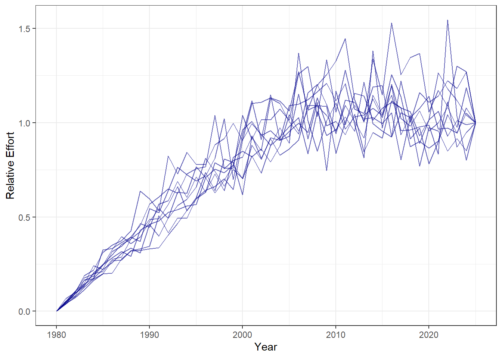
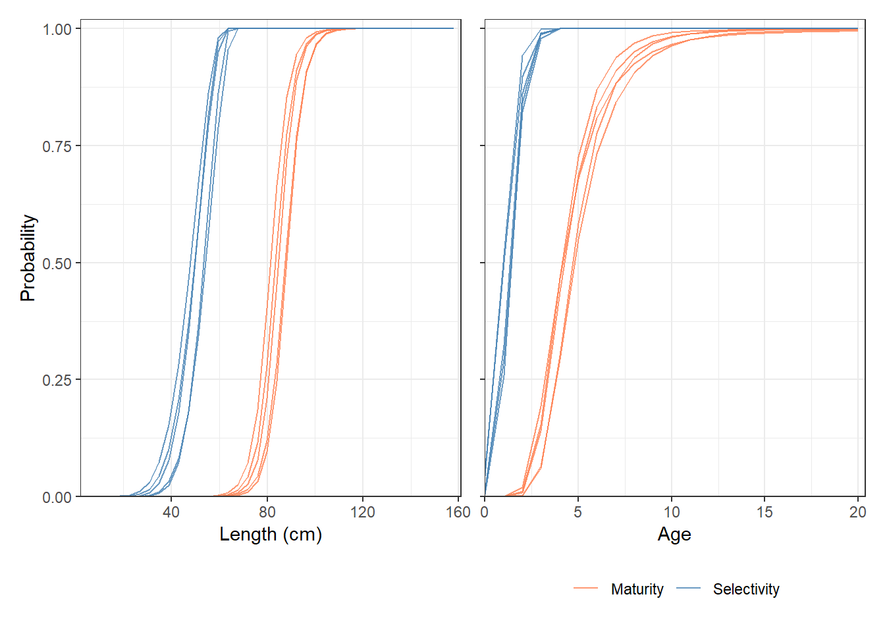
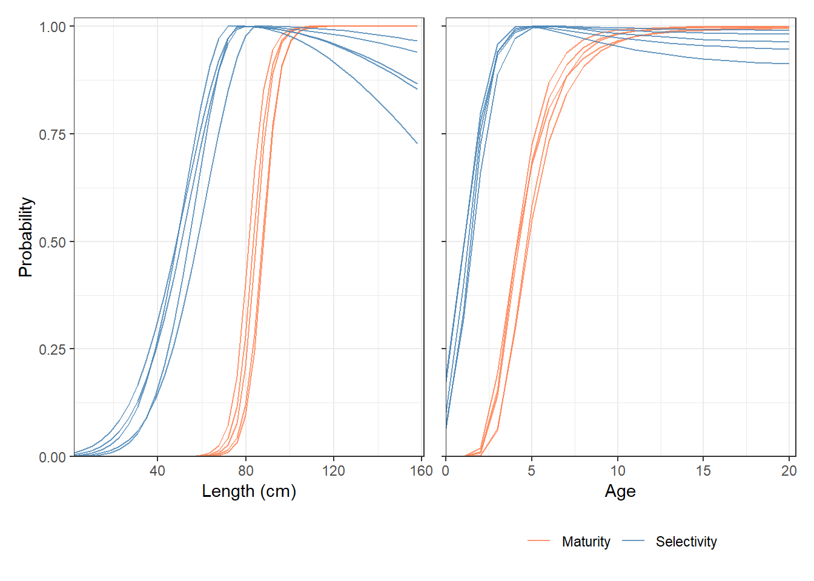

AlbacoreExStock <- Stock(Name = "Example Albacore Stock",
CommonName = "Albacore",
Species = "Thunnus alalunga")7 Built-In Examples
This chapter describes the built-in example objects included with openMSE and walks through how each is constructed.
The objects are built manually here, with the parameters are specified directly by the user. This is the most transparent approach and the easiest way to understand the structure of each object and its subcomponents.
However, this is not the only way to construct operating models. openMSE also supports importing parameter estimates directly from stock assessment output (e.g., Stock Synthesis), as well as conditioning an operating model on observed fishery data such as catch histories and abundance indices. These alternative approaches are covered in other chapters in this section.
7.1 Example Stock Objects
A Stock object defines the biological and demographic characteristics of a fish population in the operating model. It is composed of a set of subcomponent objects including age structure, length, weight, natural mortality, and maturity schedules, the stock-recruitment relationship, and spatial dynamics.
See ?Stock for full documentation of the Stock object and its subcomponents.
Two example Stock objects are provided, representing species with contrasting life histories:
-
AlbacoreExStock: a relatively long-lived, slow-growing large pelagic species; -
ButterfishExStock: a short-lived, fast-growing forage species.
7.1.1 AlbacoreExStock
AlbacoreExStock represents an Albacore tuna (Thunnus alalunga) stock, a relatively long-lived, slow-growing large pelagic species with low natural mortality, moderate steepness, and relatively low recruitment variability.
7.1.1.1 Initialize the Stock
The Stock object is created with a Name, which serves as a unique identifier, along with the optional CommonName and Species metadata fields for display and documentation purposes. The object acts as a container for the biological and demographic subcomponents assigned in the steps that follow.
7.1.1.2 Age Structure
The age structure of the stock is defined by setting the maximum age (assumed to be a plus-group by default).
The Ages function is used to initialize an ages-class object and assign it to the AlbacoreExStock stock object created in the previous step.
See ?Ages for more information on the Ages object.
Ages(AlbacoreExStock) <- Ages(MaxAge = 20)7.1.1.3 Length-at-Age
Growth for this stock follows a von Bertalanffy model, with Linf, K, and t0 each specified as uniform ranges.
The CVatAge parameter captures individual variation in length at age around the mean growth trajectory.
As with Ages above, the Length function is used to create the length-class object and assign it to the AlbacoreExStock stock object.
The remaining subcomponents follow the same pattern: each is constructed using its corresponding constructor function and assigned to the Stock object via the matching slot-assignment operator (see Section 2.3).
See ?Length for more information on the Length object and ?LengthModels for other length-at-age models included in openMSE.
7.1.1.4 Weight-at-Age
An allometric length-weight relationship \(W = \alpha L^\beta\) is used to convert mean length-at-age to a weight-at-age schedule.
In this example the parameters are specified as fixed point values rather than ranges.
See ?Weight for more details on the Weight object.
Weight(AlbacoreExStock) <- Weight(
Pars = list(alpha = 1.34E-05,
beta = 3.106)
)7.1.1.5 Natural Mortality
Natural mortality \(M\) is specified as a uniform prior range, reflecting uncertainty in this parameter.
In this example, \(M\) is assumed age-invariant and constant across time.
See ?NaturalMortality and ?NaturalMortalityModels for more details on the NaturalMortality object and supported models.
7.1.1.6 Maturity
The maturity ogive is described by a logistic function parameterized by \(L_{50}\) (length at 50% maturity) and \(L_{50\_95}\) (the length increment from 50% to 95% maturity), each specified as ranges of a uniform distribution.
Spawning biomass is calculated by multiplying the maturity- and weight-at-age schedules. By default, spawning production is assumed proportional to spawning biomass.
Users can optionally specify a Fecundity object that defines egg production at age explicitly; in this case, spawning production is calculated directly from the Fecundity schedule, and the Maturity object is used only to identify mature fish rather than to scale reproductive output.
See ?Maturity, ?MaturityModels, and ?Fecundity for full documentation.
7.1.1.7 Stock-Recruitment Relationship
A Beverton-Holt stock-recruitment relationship is used for this stock. It is parameterized by steepness \(h\), which defines the fraction of unfished recruitment produced at 20% of unfished spawning biomass.
R0 sets the unfished equilibrium recruitment in numbers, establishing the scaling of the population. Process error in recruitment is modelled as log-normal deviations with standard deviation SD and first-order autocorrelation AC.
In this example, all parameters except R0 are defined as the bounds of a uniform distribution.
See ?SRR and ?SRRModels for more details on the SRR object and supported models.
7.1.1.8 Spatial Structure
The Albacore stock is distributed across two areas in this example.
UnfishedDist sets the lower and upper bounds of a uniform distribution for the equilibrium proportion of unfished biomass in Area 1; ProbStaying is the annual probability that an individual remains in Area 1; and RelativeSize is the relative habitat size of Area 1. The complement of each quantity applies to Area 2.
The Spatial subcomponent is optional. If omitted, the model assumes a single well-mixed area. When spatial structure is included, all stocks within an operating model must share the same spatial configuration (i.e., the same number of areas). openMSE supports an unlimited number of areas and additional features such as age-based movement rates. See ?Spatial for full documentation.
7.1.1.9 Depletion
The Depletion subcomponent is optional.
When specified, it defines the stock’s depletion level at the beginning and/or end of the historical period, expressed as a fraction of unfished biomass \(\frac{B}{B_0}\) (other definitions of depletion can be specified using the Reference argument).
In this example, terminal depletion is given a wide range of 5–60% of \(B_0\), reflecting broad uncertainty in current stock status.
When Final is specified, the operating model adjusts each fleet’s catchability so that the simulated terminal depletion matches the specified distribution (see Section 7.2). This ensures that each Stock object remains compatible with any Fleet object, regardless of the effort history or catchability values the fleet specifies.
In practice, users will typically parameterize fleets with an explicit effort time series and catchability values that reflect the history of the fishery as estimated by a stock assessment or conditioning model. In these cases, Final should be left unspecified and terminal depletion will be determined by the interaction between effort, catchability, and the population dynamics.
Specifying Final alongside explicit catchability values is not recommended, as the optimization will override the user-specified catchability and may produce unexpected results.
See ?Depletion for full documentation.
Depletion(AlbacoreExStock) <- Depletion(
Final = c(0.05, 0.6),
Reference = "B0"
)
7.1.2 ButterfishExStock
ButterfishExStock represents a Butterfish (Peprilus triacanthus) stock, a short-lived, fast-growing forage species with high natural mortality and wide uncertainty on recruitment and maturity.
7.1.2.1 Initialize the Stock
ButterfishExStock <- Stock(Name = "Example Butterfish Stock",
CommonName = "Butterfish",
Species = "Peprilus triacanthus")7.1.2.2 Age Structure
A maximum age of 8 years is assumed for this stock. As with the Albacore example described above, this maximum age class is used as a plus-group.
Ages(ButterfishExStock) <- Ages(MaxAge = 8)7.1.2.3 Length-at-Age
Length-at-age is again modeled wit the vonBert model.
7.1.2.4 Weight-at-Age
The same allometric length-weight relationship is specified with fixed point values.
Weight(ButterfishExStock) <- Weight(
Pars = list(alpha = 1.59e-05,
beta = 3.1)
)7.1.2.5 Natural Mortality
Natural mortality is substantially higher than for Albacore (0.7–0.9), again assumed constant across ages and timesteps.
7.1.2.6 Maturity
The same logistic parameterization is used as for Albacore, but with substantially wider prior ranges on both \(L_{50}\) and \(L_{50\_95}\), reflecting greater uncertainty in the maturity schedule of this species.
7.1.2.7 Stock-Recruitment Relationship
Recruitment variability is considerably higher than for Albacore (SD of 0.7–1.1 versus 0.15–0.3), consistent with the volatile year-class dynamics typical of short-lived forage species.
7.1.2.8 Spatial Structure
The lower ProbStaying values (0.4–0.6) relative to Albacore reflect greater mixing between areas.
7.1.2.9 Depletion
The same broad prior range as AlbacoreExStock is used, for the same reasons described above.
Depletion(ButterfishExStock) <- Depletion(
Final = c(0.05, 0.6),
Reference = "B0"
)
7.2 Example Fleet Objects
A Fleet object defines the exploitation characteristics of a fishing fleet in the operating model. It is composed of subcomponent objects including a historical effort trajectory, selectivity-at-age or -at-length, and optional components such as catchability, retention, and discard mortality.
See ?Fleet for full documentation of the Fleet object and its subcomponents.
Two example Fleet objects are provided, representing gear types with contrasting selectivity patterns:
-
AsympExFleet: a fleet with asymptotic (logistic) selectivity, retaining all fish above the fully-selected length; -
DomeExFleet: a fleet with dome-shaped selectivity, with reduced retention of the largest fish.
Both fleets use the same general effort trajectory, rising through the historical period and stabilising at the terminal year, but differ in both the rate of that rise and in their selectivity curves.
7.2.1 AsympExFleet
AsympExFleet represents a fleet using gear with asymptotic selectivity.
7.2.1.1 Initialize the Fleet
The Fleet object is created with a Name that serves as a unique identifier. As with Stock, it acts as a container for the subcomponent objects assigned below.
AsympExFleet <- Fleet(Name = "AsympExFleet")7.2.1.2 Effort
In this example, historical effort is specified as a data frame of control points, from which nSim stochastic effort trajectories are generated by the operating model.
Each control point defines Year (as a normalized index from 0 to 1 spanning the historical period), and Lower and Upper bounds of a uniform distribution from which relative effort at that point is drawn independently for each simulation. The resulting trajectories are linearly interpolated between control points, with multiplicative lognormal process error with coefficient of variation CV, and normalized so that effort equals 1 in the terminal year.
In this example, effort starts at zero, rises to a plateau between 40% and 60% of maximum by the midpoint of the historical period, and remains at full effort through to the terminal year.
This control-point approach is typical of data-limited settings where absolute effort records are unavailable. It allows users to sketch plausible trends in fishing pressure, e.g., a gradual build-up, a period of stability, then a decline, without requiring a precise time series. Figure 7.1 shows the resulting stochastic trajectories generated from the control points defined above.
Because the resulting effort index is relative and normalized to 1 at the terminal year, it carries no absolute scale; catchability is then back-calculated from the value of Final in the Depletion component of the corresponding stock object (see Section 7.1.1.9).
In practice, most users would instead supply an explicit effort time series derived from stock assessment output (often assumed proportional to fishing mortality), paired with a Catchability object, and leave Depletion@Final unspecified.
See ?Effort and ?GenHistEffort for full documentation of the Effort object and the control-point data frame format.
Effort(AsympExFleet) <- Effort(
Effort = data.frame(
Year = c(0, 0.3, 0.6, 1.0),
Lower = c(0, 0.4, 1, 1),
Upper = c(0, 0.6, 1, 1),
CV = 0.1)
)The following code block demonstrates the resulting effort trajectories specified above:
# Extract `Effort` slot from the `Effort` object
EffortDF <- Effort(AsympExFleet) |> Effort()
# Generate effort trajectories
EffortArray <- GenHistEffort(EffortDF,
nSim = 10,
Years = 1980:2025)
Array2DF(EffortArray) |>
ggplot2::ggplot(ggplot2::aes(x = Year, y = Value, group = Sim)) +
ggplot2::geom_line(alpha = 0.6, color = "darkblue") +
ggplot2::labs(y = "Relative Effort", x = "Year") +
ggplot2::theme_bw()
AsympExFleet, generated from the control-point data frame. Effort is relative and normalized to 1 in the terminal year; the spread across trajectories reflects uncertainty in the level of effort at the intermediate control points, with additional lognormal process error (CV = 0.1) applied within each simulation.
7.2.1.3 Selectivity
Selectivity is specified using a double-normal length-based model parameterized by three quantities:
-
L5, the length at 5% selectivity; -
LFS, the length at full (100%) selectivity; and -
Vmaxlen, the selectivity of the longest fish in the population.
Setting Vmaxlen = 1 produces a purely asymptotic curve, selectivity rises from L5 to LFS and remains at 1 for all larger fish (Figure 7.2).
With isRel = TRUE, the L5 and LFS values are interpreted as multiples of \(L_{50}\) (the length at 50% maturity) of the paired stock rather than as absolute lengths. This is used here so that example fleets can be combined with the example stocks without modification.
In practice, users would typically specify selectivity in absolute length units tailored to the specific stock being modelled. The pairing between a fleet and a stock occurs when the fleet is added to an OM object; see Section 7.5 for details.
See ?Selectivity and ?SelectivityModels for full documentation and available model families.
The code block below demonstrates the resulting selectivity schedules when this Selectivity object is paird with the AlbacoreExStock stock object.
It first manually populates the Maturity and Selectivity objects for AlbacoreExStock and AsympExFleet respectively, then plots the resulting at-age and at-length schedules. Populating these objects expands the parameter inputs (the bounds vectors specified in the constructor calls above) into the full Sim × Age × Year and Sim × Class × Year arrays, sampling one value per simulation (here nSim = 5) from each uniform range.
In normal use this happens automatically when Populate() is called on the OM object; it is done explicitly here for illustration only. See Chapter 13 for a full description of the population process.
# Populate Maturity and Selectivity objects
# (Length and Weight objects are populated internally)
Maturity(AlbacoreExStock) <- PopulateMaturity(
Maturity = Maturity(AlbacoreExStock),
Ages = Ages(AlbacoreExStock),
Length = Length(AlbacoreExStock),
Weight = Weight(AlbacoreExStock)
)
Selectivity <- PopulateSelectivity(
Selectivity = Selectivity(AsympExFleet),
Ages = Ages(AlbacoreExStock),
Length = Length(AlbacoreExStock),
Weight = Weight(AlbacoreExStock),
Maturity = Maturity(AlbacoreExStock)
)
# Build combined data frames
sel_age <- MeanAtAge(Selectivity) |>
Array2DF() |>
dplyr::mutate(Schedule = "Selectivity")
mat_age <- MeanAtAge(Maturity(AlbacoreExStock)) |>
Array2DF() |>
dplyr::mutate(Schedule = "Maturity")
sel_len <- MeanAtLength(Selectivity) |>
Array2DF() |>
dplyr::mutate(Schedule = "Selectivity")
mat_len <- MeanAtLength(Maturity(AlbacoreExStock)) |>
Array2DF() |>
dplyr::mutate(Schedule = "Maturity")
df_age <- dplyr::bind_rows(sel_age, mat_age)
df_len <- dplyr::bind_rows(sel_len, mat_len)
# Plot schedules
cols <- c("Selectivity" = "steelblue", "Maturity" = "coral")
p_len <- ggplot2::ggplot(df_len,
ggplot2::aes(x = Class,
y = Value,
colour = Schedule,
group = interaction(Sim, Schedule))) +
ggplot2::geom_line(alpha = 0.8) +
ggplot2::scale_colour_manual(values = cols) +
ggplot2::labs(x = "Length (cm)", y = 'Probability') +
ggplot2::scale_x_continuous(
expand = ggplot2::expansion(mult = c(0, 0.02))) +
ggplot2::scale_y_continuous(
expand = ggplot2::expansion(mult = c(0, 0.02)),
limits = c(0, 1)) +
ggplot2::theme_bw() +
ggplot2::theme(legend.position = "none")
p_age <- ggplot2::ggplot(df_age,
ggplot2::aes(x = Age,
y = Value,
colour = Schedule,
group = interaction(Sim, Schedule))) +
ggplot2::geom_line(alpha = 0.8) +
ggplot2::scale_colour_manual(values = cols) +
ggplot2::labs(x = "Age", y = NULL) +
ggplot2::scale_x_continuous(
expand = ggplot2::expansion(mult = c(0, 0.02))) +
ggplot2::scale_y_continuous(
expand = ggplot2::expansion(mult = c(0, 0.02)),
limits = c(0, 1)) +
ggplot2::theme_bw() +
ggplot2::theme(legend.position = "bottom",
legend.title = ggplot2::element_blank(),
axis.text.y = ggplot2::element_blank())
patchwork::wrap_plots(p_len, p_age, ncol = 2) 
AsympExFleet paired with AlbacoreExStock, shown at length (left) and age (right). Each line represents one simulation replicate; the spread reflects uncertainty in the growth and maturity parameters sampled across simulations. Length-based parameters (L5, LFS) are specified relative to \(L_{50}\) of the paired stock (isRel = TRUE), so the position of the selectivity curve varies across simulations in proportion to the sampled maturity schedule.
7.2.1.4 Optional Subcomponents
Retention, DiscardMortality, and Catchability are not specified for AsympExFleet. The first two are optional: when omitted, the model assumes all age and size classes are fully retained and that discarded fish have zero mortality. See ?Retention and ?DiscardMortality for full documentation.
Catchability is a special case. It is left empty here because, as described above, the example stocks have Depletion@Final specified, which instructs the operating model to calculate the catchability required to achieve the target terminal depletion for each simulation (see the Depletion subsection under each example stock above).
In practice, users would typically specify catchability explicitly based on stock assessment estimates and leave Depletion@Final unspecified, allowing terminal depletion to emerge from the interaction between effort, catchability, and population dynamics.
7.2.2 DomeExFleet
DomeExFleet represents a fleet with dome-shaped selectivity. Selectivity rises through the ascending limb in the same way as AsympExFleet, but declines for the largest fish.
7.2.2.1 Initialize the Fleet
DomeExFleet <- Fleet(Name = "DomeExFleet")7.2.2.2 Effort
The effort trajectory for DomeExFleet follows the same control-point structure as AsympExFleet, but the mid-period plateau is lower (0.4–0.6 of maximum), indicating a slower build-up of fishing pressure before the final ramp-up to full effort at the terminal year.
Effort(DomeExFleet) <- Effort(
Effort = data.frame(
Year = c(0, 0.3, 0.6, 1.0),
Lower = c(0, 0.4, 0.4, 1),
Upper = c(0, 0.6, 0.6, 1),
CV = 0.1
)
)7.2.2.3 Selectivity
The dome-shaped curve is produced by setting the Vmaxlen parameter of the DoubleNormal model to a range of 0.5–1 rather than a fixed value of 1.
Vmaxlen is the selectivity at the largest length class (defined in Classes). Values below 1 reduce selectivity at the largest sizes, with Vmaxlen = 0.5 meaning that fish in the largest length class are only half as likely to be caught as fish at the fully-selected length (Figure 7.3).
See ?SelectivityModels for more details on DoubleNormal and other supported selectivity models.

DomeExFleet paired with AlbacoreExStock, shown at length (left) and age (right). Each line represents one simulation replicate; the spread reflects uncertainty in the growth and maturity parameters sampled across simulations. Length-based parameters (L5, LFS) are specified relative to \(L_{50}\) of the paired stock (isRel = TRUE), so the position of the selectivity curve varies across simulations in proportion to the sampled maturity schedule.
7.3 Example Obs Objects
An Obs object defines the observation model for a fleet and its corresponding stock or stock complex. It describes the structure of sampling error and systematic bias for each data type. Each fleet object has its own Obs object.
See ?Obs for full documentation. See ?CatchObs, ?IndicesObs, and ?CompObs for documentation of the subcomponent constructors.
The Obs object interacts closely with the corresponding Data object. See Chapter 17 for more details.
Five example Obs objects are provided, representing monitoring programmes of increasing data richness:
-
CommercialFleetObs: landings, discards, effort, and a CPUE index from a commercial fleet. -
CatchAndSurveyObs: landings and a fishery-independent survey index only. -
AgeStructuredObs: landings, discards, a survey index, and age composition samples from both landings and discards. -
LengthStructuredObs: landings, discards, a survey index, and length composition samples from both landings and discards. -
DataRichObs: all data types ares generated: landings, discards, effort, CPUE, survey, and both age and length compositions for landings and discards.
7.3.1 Observation Error Parameters
Before describing the individual objects, it is useful to understand the parameters common to all observation subcomponents.
CatchObs (used for Landings and Discards) takes two main parameters:
CV: coefficient of variation of lognormal observation error on catch. Accepts a scalar (same CV for all simulations), a length-2 vectorc(lower, upper)(a unique CV per simulation is drawn fromUniform(lower, upper)), or a length-nSimarray (used directly). After population,@CVis a named[nSim]vector and@Errorbecomes a named[nSim × nYear]lognormal array.Bias: multiplicative observation bias on the natural scale.NULLdefaults to 1 (unbiased). A length-nSimvector is used directly as one bias per simulation. Any other scalar input is treated as the CV of a lognormal from whichnSimbias values are drawn — e.g.Bias = 0.1draws biases centred at 1 with CV of 10%. After population,@Biasis a named[nSim]array of positive multipliers.
EffortObs (used for Effort) takes the same CV and Bias parameters as CatchObs.
IndicesObs (used for CPUE and Survey) takes:
-
CV: coefficient of variation of lognormal index observation error. -
AC: lag-1 autocorrelation of index residuals, reflecting persistent deviations in survey catchability or other sources of correlated index error. -
Selectivity: how the simulated population is aggregated to produce the index."Biomass"applies flat selectivity (total biomass);"SBiomass"uses maturity-at-age as selectivity (equivalent to a spawning biomass index). For CPUE indices, the corresponding fleet selectivity is used automatically whenSelectivityisNULL.
CompObs (used for all composition slots) takes:
-
SampleSize: nominal number of fish aged or measured per year. A length-2 vector draws a unique value per simulation fromUniform(lower, upper). SettingSampleSize = NULLsuppresses composition data generation entirely. -
ESS: effective sample size, which controls stochastic variability in the composition draw independently ofSampleSize. Values ofESS < SampleSizeproduce overdispersion relative to a pure multinomial — typical of age or length compositions that contain correlated sampling error. -
Theta: Dirichlet-Multinomial dispersion parameter in \((0, 1]\).Theta = 1recovers a standard multinomial draw; values approaching 0 produce maximum overdispersion.
7.3.2 CommercialFleetObs
CommercialFleetObs represents a commercial fleet monitoring programme that produces records of total landings & discards, fishing effort, and an index of vulnerable abundance. Landings and discards are observed with moderate error and some positive bias in landings (reflecting potential over-reporting or high-grading), effort is recorded with low error, and a CPUE index is available.
NoteCPUE and Survey Indices
Note that CPUE (and survey indices) in openMSE are calculated directly from the OM population abundance, not derived from the ratio of observed catch to observed effort. This is equivalent to assuming the index has been standardised so that it reflects true abundance rather than the conflated product of catchability, effort, and catch reporting error.
The index is assumed proportional to abundance (i.e. a constant catchability coefficient), with no hyperdepletion or hyperstability. The CV and AC parameters in IndicesObs represent the residual observation error around that proportional relationship after standardisation.
CommercialFleetObs <- Obs("CommercialFleetObs")
Landings(CommercialFleetObs) <- CatchObs(
CV = c(0.05, 0.15),
Bias = c(1.00, 1.15)
)
Discards(CommercialFleetObs) <- CatchObs(
CV = c(0.20, 0.40),
Bias = c(0.80, 1.20)
)
Effort(CommercialFleetObs) <- EffortObs(
CV = c(0.02, 0.08),
Bias = c(0.95, 1.05)
)
CPUE(CommercialFleetObs) <- IndicesObs(
CV = c(0.15, 0.25),
AC = c(0.0, 0.3)
)Landings CV of 5–15% and a bias range of 1.0–1.15 reflect moderately reliable catch reporting with a tendency toward slight overestimation. Discard CV of 20–40% and a wide bias range of 0.8–1.2 reflect the greater uncertainty typical of discard estimation. The CPUE index has CV of 15–25% and moderate autocorrelation (AC 0–0.3).
7.3.3 CatchAndSurveyObs
CatchAndSurveyObs represents a minimal data scenario: only landed catch and a fishery-independent survey index are available.
The survey uses Selectivity = "Biomass", meaning it is treated as a total biomass index with flat selectivity across ages. Landings CV of 10–25% and a downward bias range of 0.8–1.0 reflect the possibility of underreporting.
7.3.4 AgeStructuredObs
AgeStructuredObs represents a data-moderate programme with age-structured biological sampling. In addition to landings and discards, a fishery-independent survey and age composition samples from both the landed and discarded catch are available.
AgeStructuredObs <- Obs("AgeStructuredObs")
Landings(AgeStructuredObs) <- CatchObs(
CV = c(0.05, 0.10),
Bias = c(0.95, 1.05)
)
Discards(AgeStructuredObs) <- CatchObs(
CV = c(0.15, 0.25),
Bias = c(0.95, 1.05)
)
Survey(AgeStructuredObs) <- IndicesObs(
CV = c(0.10, 0.20),
Selectivity = "SBiomass",
AC = c(0.0, 0.1)
)
LandingsAtAge(AgeStructuredObs) <- CompObs(
SampleSize = c(200, 400),
ESS = c(50, 100),
Theta = c(0.5, 1.0)
)
DiscardsAtAge(AgeStructuredObs) <- CompObs(
SampleSize = c(100, 200),
ESS = c(30, 80),
Theta = c(0.4, 0.8)
)The survey uses Selectivity = "SBiomass", treating it as a spawning biomass index. Age compositions are sampled with SampleSize of 200–400 (landings) and 100–200 (discards), with effective sample sizes of 50–100 and 30–80 respectively. Theta values of 0.4–1.0 allow for additional Dirichlet-Multinomial overdispersion.
7.3.5 LengthStructuredObs
LengthStructuredObs is structured analogously to AgeStructuredObs, but with length composition samples in place of age compositions. This reflects monitoring programmes where length measurement is feasible but ageing is not.
LengthStructuredObs <- Obs("LengthStructuredObs")
Landings(LengthStructuredObs) <- CatchObs(
CV = c(0.10, 0.20),
Bias = c(0.90, 1.05)
)
Discards(LengthStructuredObs) <- CatchObs(
CV = c(0.15, 0.25),
Bias = c(0.95, 1.05)
)
Survey(LengthStructuredObs) <- IndicesObs(
CV = c(0.15, 0.30),
Selectivity = "Biomass",
AC = c(0.0, 0.2)
)
LandingsAtSize(LengthStructuredObs) <- CompObs(
SampleSize = c(300, 600),
ESS = c(60, 120),
Theta = c(0.5, 1.0)
)
DiscardsAtSize(LengthStructuredObs) <- CompObs(
SampleSize = c(150, 300),
ESS = c(40, 80),
Theta = c(0.4, 0.8)
)Length composition sample sizes are somewhat larger than the age-structured equivalents (300–600 for landings), consistent with the lower cost of length measurement relative to ageing.
7.3.6 DataRichObs
DataRichObs represents a comprehensive data-rich monitoring programme, combining all available data types: landings, discards, effort, a CPUE index, a fishery-independent survey, and both age and length compositions for landings and discards.
DataRichObs <- Obs("DataRichObs")
Landings(DataRichObs) <- CatchObs(
CV = c(0.03, 0.08),
Bias = c(0.98, 1.02)
)
Discards(DataRichObs) <- CatchObs(
CV = c(0.10, 0.20),
Bias = c(0.90, 1.10)
)
Effort(DataRichObs) <- EffortObs(
CV = c(0.02, 0.05),
Bias = c(0.98, 1.02)
)
CPUE(DataRichObs) <- IndicesObs(
CV = c(0.10, 0.20),
AC = c(0.0, 0.2)
)
Survey(DataRichObs) <- IndicesObs(
CV = c(0.08, 0.15),
Selectivity = "SBiomass",
AC = c(0.0, 0.1)
)
LandingsAtAge(DataRichObs) <- CompObs(
SampleSize = c(300, 500),
ESS = c(80, 150),
Theta = c(0.6, 1.0)
)
DiscardsAtAge(DataRichObs) <- CompObs(
SampleSize = c(150, 250),
ESS = c(50, 100),
Theta = c(0.5, 0.9)
)
LandingsAtSize(DataRichObs) <- CompObs(
SampleSize = c(400, 700),
ESS = c(100, 180),
Theta = c(0.6, 1.0)
)
DiscardsAtSize(DataRichObs) <- CompObs(
SampleSize = c(200, 350),
ESS = c(60, 120),
Theta = c(0.5, 0.9)
)Observation errors throughout are tighter than in the other example objects: landings CV of 3–8%, effort CV of 2–5%, and survey CV of 8–15% with very low autocorrelation (AC 0–0.1). The survey uses Selectivity = "SBiomass" as an index of spawning biomass, while the CPUE index uses fleet selectivity automatically. Composition sample sizes are the largest of all example objects, with ESS values approaching the nominal sample sizes, reflecting high-quality age and length data.
7.4 Example Imp Objects
Note
The Imp class is currently a placeholder and is not yet implemented.
This section will be updated once example Imp objects are developed.
7.5 Example OM Objects
Four example OM objects are provided, covering the most common configurations of stocks, fleets, and observation programmes. All use the example Stock and Fleet objects described in Section 7.1 and Section 7.2, and the example Obs objects described in Section 7.3.
Each object is initialised with 8 stochastic simulations (nSim = 8), a 20-year historical period (nYear = 20), and a 30-year projection period (pYear = 30).
7.5.1 SingleStockOM
The simplest configuration: one stock and one fleet.
AlbacoreExStock is fished by AsympExFleet with age-structured data collection (AgeStructuredObs).
SingleStockOM <- OM(
Name = "Single Stock - Single Fleet",
Author = "A. Hordyk",
nSim = 8,
nYear = 20,
pYear = 30,
Stock = AlbacoreExStock,
Fleet = AsympExFleet,
Obs = AgeStructuredObs
)When a single Stock, Fleet, or Obs object is assigned without a list wrapper, openMSE treats it as a single-stock, single-fleet model.
Alternatively, the Stock, Fleet, and Obs objects could also be assigned with assignment functions, either directly as the objects:
Stock(SingleStockOM) <- AlbacoreExStock
Fleet(SingleStockOM) <- AsympExFleet
Obs(SingleStockOM) <- AgeStructuredObsor explictly as lists and nested lists that represent the final structure:
7.5.2 TwoFleetOM
One stock fished by two fleets with different selectivity profiles and data collection programs.
AlbacoreExStock is fished by AsympExFleet (with AgeStructuredObs) and DomeExFleet (with CatchAndSurveyObs), representing a scenario where the dome-selected fleet has only catch and survey data available.
For a single stock with multiple fleets, Fleet and Obs are supplied as nested lists with one outer element per stock and one inner element per fleet: Fleet[[stock]][[fleet]]. The outer list must always be present even for a single stock.
7.5.3 MultiStockOM
Two stocks each fished by two fleets, with different observation programmes per stock-fleet combination.
AlbacoreExStock is fished by both AsympExFleet (with AgeStructuredObs) and DomeExFleet (with CommercialFleetObs); ButterfishExStock is fished by the same two fleets but monitored with CatchAndSurveyObs and LengthStructuredObs respectively.
MultiStockOM <- OM(
Name = "Multi Stock - Multi Fleet",
Author = "A. Hordyk",
nSim = 8,
nYear = 20,
pYear = 30,
Stock = list(AlbacoreExStock, ButterfishExStock),
Fleet = list(
list(AsympExFleet, DomeExFleet),
list(AsympExFleet, DomeExFleet)
),
Obs = list(
list(AgeStructuredObs, CommercialFleetObs),
list(CatchAndSurveyObs, LengthStructuredObs)
)
)Fleet and Obs are both indexed [[stock]][[fleet]]. All stocks must have the same number of fleets.
In this example both stocks share the same fleet objects. However, in practice, fleet specifications typically differ between stocks even when the same physical gear is operating on both populations, since selectivity, retention, discard mortality, and effort can all vary by stock.
7.5.4 ComplexOM
Two stocks managed as a single stock complex, fished by one fleet with one shared observation programme.
The Complexes argument groups both stocks into a single complex named StockComplex, meaning fishery data are reported, and management advice is implemented, at the complex level rather than per stock.
When stocks are grouped into complexes, Obs must be indexed by complex rather than by stock (length(Obs) == nComplex). Here a single AgeStructuredObs object is assigned and applied to the whole complex. The fleet operates on both stocks simultaneously; the relative contribution of each stock to the complex catch is determined by their relative abundance and the shared selectivity schedule.
As with MultiStockOM above, in practice the fleet properties would typically vary over stocks.
See Chapter 14 for more details on stock complexes.